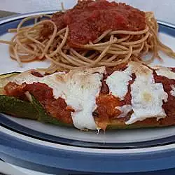
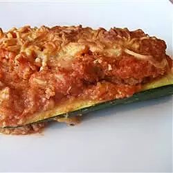

Italian Stuffed Zucchini


Description:
This is an easy, tasty way to use up zucchini. I have listed the ingredients per person so the amount can be adjusted, depending on how much zucchini you have. Can be made lacto-vegetarian or vegan.
Ingredients:
- 1 zucchini
- 2 tablespoons Italian-style dried bread crumbs
- 2 tablespoons grated Parmesan cheese
- 2/3 cup fozen burger-style crumbles
- 1/2 cup spaghetti sauce
- 1/4 cup shredded mozzarella cheese
Directions:
- Preheat oven to 350 degrees F (175 degrees C).
- Slice each zucchini in half lengthwise. Hollow out the zucchini. Place the scraped out zucchini into a medium bowl. Combine zucchini, bread crumbs, Parmesan cheese, burger-style crumbles and pasta sauce. Mix well.
- Place mixture into hollowed out zucchini. Arrange zucchini in a baking dish, sprinkle with mozzarella cheese; bake for 40 minutes.
Nutrition Facts
Per serving: 578 calories; protein 77g; carbohydrates 40.6g; fat 16.2g; cholesterol 33.6mg; sodium 1877mg.
All information and pictures taken from: All Recipes